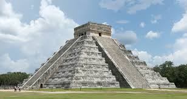

The following is an image of the Chichen Itza

Chichen Itza
- Location: Yucatán Peninsula, Mexico.
- Significance: One of the largest and most influential Mayan cities, thriving between 600–1200 CE.
- Main Attraction: El Castillo (Temple of Kukulcán), a step pyramid with 365 steps.
- Features: Includes the Great Ball Court, Temple of the Warriors, and the Sacred Cenote.
- Astronomical Alignment: Structures are aligned with celestial events like equinoxes.
- UNESCO Status: World Heritage Site since 1988.